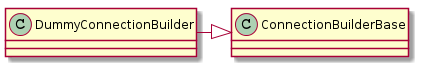
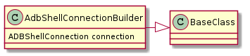
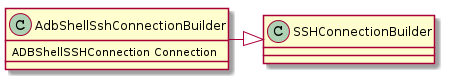
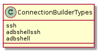

The ConnectionBuilder¶
A module to build the connections.
- Each expects only a parameters named-tuple on initiation.
- Each has a connection parameter
SSHParameters¶
This is a named-tuple to pass parameters to the ssh-connection.
| SSHParameters(hostname, username[, ...]) | To make the parameters optional this is changed to a class |

DummyConnectionBuilder¶
This is for the odd cases where we need a fake connection that does not actually connect to anything. In particular this was created for the screen-iperf-hack for iPads.
| DummyConnectionBuilder(*args, **kwargs) | Builds a Dummy Connection |

AdbShellConnectionBuilder¶
A builder for a local adb-shell connection. In this case the connection is a sub-process of the computer running the APE (it is assumed that the android is directly connected to the PC via an ADB USB bridge) so it doesn’t use the parameters, but to make the signatures the same across the builders, something is expected (even if it’s just None) on construction.
| AdbShellConnectionBuilder([parameters]) | Use this to get an adb shell connection |

SSHConnectionBuilder¶
A Builder of SSHConnections.
| SSHConnectionBuilder(parameters) | Use this to get an ssh connection |
AdbShellSshConnectionBuilder¶
A builder of remote (SSH-based) connections for an ADB shell.
| AdbShellSshConnectionBuilder(*args, **kwargs) | A class to build an adb-shell connection over ssh |

ConnectionBuilderTypes¶
A holder of string constants for the types of connections that can be built.

ConnectionBuilders¶
The connection builders can be retrieved by a dictionary named connection_builders.
For example, to retrieve an SSHConnection from this module (connectionbuilder):
from connectionbuilder import connection_builders, ConnectionBuilderTypes, SSHParameters
ssh_builder = connection_builders[ConnectionBuilderTypes.ssh]
parameters = SSHParameters(hostname='192.168.10.24', username='allion')
ssh_builder(parameters)
ssh_connection = ssh_builder.connection
Note
The import here assumes you are in the same working directly, a more realistic one would use the package path.
| key | value |
|---|---|
| ConnectionBuilderTypes.adbshell | AdbShellConnectionBuilder |
| ConnectionBuilderTypes.adbshellssh | AdbShellSshConnectionBuilder |
| ConnectionBuilderTypes.ssh | SSHConnectionBuilder |
| ConnectionBuilderTypes.dummy | DummyConnection |
Testing the Builders¶
| TestConnectionBuilders.test_valid_keys() | Are all the keys in the ConnectionBuilderTypes? |
| TestDummyConnectionBuilder.test_connection() | Is the connection a Dummy Connection? |
| TestConnectionBuilderBase.test_parameters() | Does ConnectionBuilderBase take a parameters argument on construction? |
| TestConnectionBuilderBase.test_no_connection(...) | Does a child that hasn’t implemented the connection raise an error? |